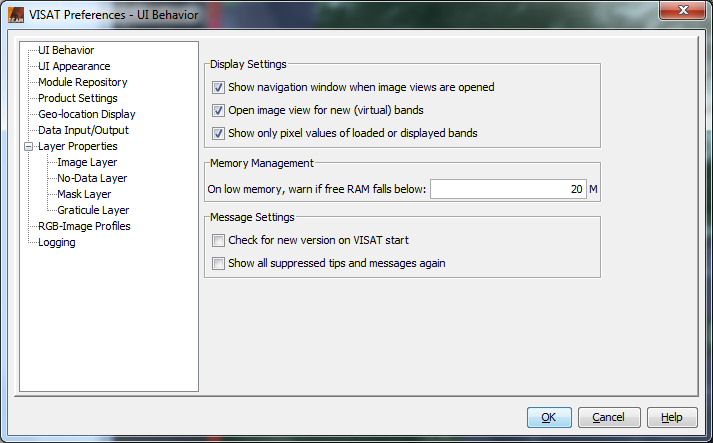

On the left side of the Preferences dialog window you can see a thematic
tree where you can select the context of the settings you want to change. In
the following example a screen shot is shown where the settings for the user
interface behavior can be edited.

This preferences page contains general user interface behavior and memory
management settings.
- Show navigation window when image views are opened
If an image view is opened the Navigation Window
will also be opened.
- Open image view for new (virtual) bands
Currently, this option only affects the Band
Maths tool. If this option is selected a new image view is automatically
created and opened for any new bands created in the band maths tool.
- Show only pixel values of displayed bands
If selected, the pixel info view will only show pixel values of bands
which are currently displayed in an image view. If this option is not selected,
VISAT displays all bands contained in a product.
For those bands which are currently not displayed, VISAT reads the sample values directly
from the product file. Depending on your computer's I/O performance and the
location of the product file (e.g. CD-ROM, harddrive, network) this can have
an impact of VISAT's runtime performance.
- On low memory, warn if free RAM falls below
Here you can enter a value in megabytes, which uses VISAT to decide to pop-up
a low memory message box. Set this value to zero, if you don't want to get
any warnings.
- Check for new version on VISAT start
Checks on application start, if a new version of VISAT is available.
- Show all suppressed tips and messages again
Some dialogs of VISAT can be disabled by checking the option "Don't show
this message again". You can select this option to enable all message and tip dialog boxes again.
- UI Font:
Sets VISAT user interface font name and size.
- UI Look and Feel:
Lets you select the appearance (Look and Feel) of the user interface of VISAT.
- Module Repository URL:
This is the URL to the modules repository. The Module Manager
searches this loaction for new and updated modules.
- Use HTTP Proxy
If you are behind a proxy you should enable this option.
- Proxy Host:
The host address of your proxy.
- Proxy Port:
The port number of your proxy.
- Use HTTP proxy authentication
If your proxy requires authentication enable this option.
- User name:
Your user name.
- Password:
Your password
- Consider products as spatially compatible, if their geo-locations differ less than
This value affects the product compatibility check performed by the band maths tool.
The check is performed in order to decide which bands from which products can be used as
data source in a band maths expression. The value must be given in degrees. Use small values,
e.g. 0.0001 degrees, to perform a high accuracy check. This will ensure that products completely overlap
each other in space.
VISAT uses an image coordinate system whose origin (x=0, y=0) is the upper left corner of the
upper left pixel. Image X-coordinates increase to the right, Y-values increase downwards.
The center of the pixel in the origin is then located at (x=0.5, y=0.5).
- Relative pixel-X/Y offset
Defines a relative offset used to display image coordinates and associated geo-location information.
Note that the offset is exclusively used for coordinate value display, it does not affect the geo-coding
information associated with a data product.
- Show floating-point image coordinates
Select this option to display image coordinates as floating point values, e.g. in the
geo-location section of the Pixel Info View. If not selected,
image coordinates are displayed as integer values.
- Save product header (MPH, SPH)
This options allows you to include/exclude the main product header (MPH) and
specific product header (SPH) of ENVISAT products in/from the file being saved.
If this option is selected, VISAT stores the MPH and SPH as meta-data in the
BEAM-DIMAP (XML) header.
It is recommended to always include this meta data.
- Save product history (History)
This option switches the saving of the processing history of the product on
or off. It is recommended to always include this meta data to be able to track
the processing stages and the original product.
- Save product annotation data sets (ADS)
This options allows you to include/exclude all annotation data sets (ADS) of
ENVISAT products in/from the file being saved. If this option is selected,
VISAT stores ADS as meta-data in the BEAM-DIMAP (XML) header.
For ENVISAT products, location and annotation data sets (provided at tie-points)
need not to be stored as meta data, since VISAT automatically converts them
into tie point grids, which are separately saved.
- Use incremental Save
If this option is selected (recommended), VISAT will only save the modifications
applied to a product, such as band modified or created with band maths
tool or the removal of bands.
- Use anti-aliasing for rendering text and vector graphics
If this option is selected, VISAT uses anti-aliasing to smooth vector graphics
within image views.
- Show a navigation widget in image views
If this option is selected, VISAT shows a navigation widget in image views
for moving and rotating images within the viewport.
- Show scroll bars in image views
If this option is selected, VISAT image views are shown with horizontal and
vertical scroll bars.
- Tile cache capacity
The amount of memory the image tile cache can allocate. Allocating more memory can improve the speed of the
image processing.
- Background colour
Choose a background colour for the image displayed in the Image View.
- Show image border
Here you can specify if an image border should be visible in the Image View.
If yes, you can also set the border size and colour.
- Show pixel border in magnified views
Define whether a border should be drawn around a pixel under magnification when the mouse cursor points at it.
This preferences page provides options to customize VISAT's No-Data Overlay.
This preferences page provides options to customize VISAT's mask overlay.
- Mask colour:
Sets the default colour for newly created masks.
- Mask transparency:
Sets the default transparency for newly created masks.
This preferences page provides options to customize VISAT's graticule overlay.
- Grid behaviour:
- Compute latitude and longitude steps
The step size of the grid lines will be computed automatically.
- Average grid size in pixels
Defines the size in pixels of the grid cells.
- Latitude step (dec. degree):
Sets the grid latitude step in decimal degree.
- Longitude step (dec. degree):
Sets the grid longitude step in decimal degree.
- Line appearance:
- Line colour:
Sets the colour of the grid lines.
- Line width:
Sets the width of the grid lines.
- line transparency:
Sets the transparency of the grid lines.
- Text appearance:
- Show text lables:
Sets the visibility of the text lables.
- Text foreground colour:
Sets the colour of the graticule text (latitude and longitude values).
- Text background colour:
Sets the background colour of the graticule text (latitude and longitude values).
- Text background transparency:
Sets the transparency of the background colour of the graticule text.
This preferences page provides options to customize VISAT's world map overlay.
- World Map Layer:
Sets the world map to ESA GlobCover (default) or to NASA Blue Marble.
This preference page is used to edit the RGB profiles used for RGB image creation
from various product types. An RGB-Profile defines the band maths expressions
to be used for the red, green and blue components of an RGB image.
For detailed information about RGB-Profiles please refer to the chapter
RGB-Image Profile located at Visat/Tools/Imaging Tools
Profile Lets you Select on of the actual stored RGB-Profiles to use for creation of the new image view.
- Use the
 to open a stored
RGB-Profile file.
to open a stored
RGB-Profile file.
- Use the
 to save the currently displayed RGB-Profile.
to save the currently displayed RGB-Profile.
RGB Channels
- Red - Defines the mathematical expression for the red channel.
- Green - Defines the mathematical expression for the green channel.
- Blue - Defines the mathematical expression for the blue channel.
Use the  to
to edit the expression for the specific channel by using the Maths Expression Editor.
to
to edit the expression for the specific channel by using the Maths Expression Editor.
Note:
The expressions are not validated by VISAT, keep care of using the correct syntax.
Please refer to the Maths Expression Editor
documentation for the syntax and capablities of expressions.
This preferences page provides options to customize VISAT's logging behavior.
- Enable logging
If this option is selected, VISAT writes a log file which can be used to reconstruct
user interactions and to trace system failures.
- Log filename prefix:
Here you can enter a prefix for the log file name. The disk file name will
be assembled of this prefix plus a log file version number and an identification
number. Log files are always written the folder log located in the BEAM installation directory.
- Echo log output (effective only with console)
If VISAT is started with a text console window using the
$BeamInstallDir$/bin/visat-console.bat (Windows) or
$BeamInstallDir$/bin/visat-console.sh (Unix)
scripts, the log file entries are also printed out to the console window.
- Log extra debugging information
Sets VISAT into the debugging mode which can be helpful to find software bugs.